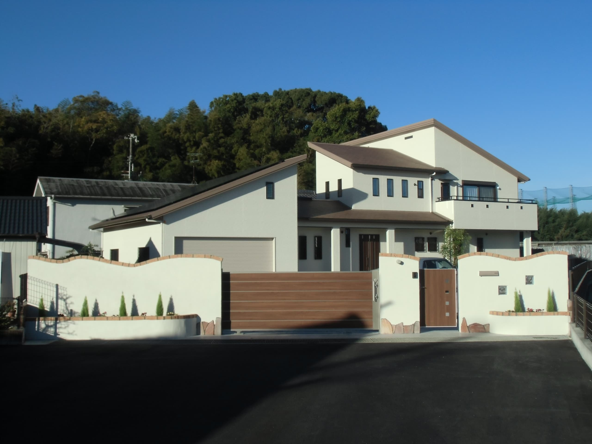

通风隔热WB工法
墙体内部空气流动有助于管理湿气并提升隔热表现，让住宅在日本潮湿季节保持更健康的室内环境。
海外版用清晰语言说明性能：通风、隔热、能源平衡、抗震准备与翻新舒适度。
墙体内部空气流动有助于管理湿气并提升隔热表现，让住宅在日本潮湿季节保持更健康的室内环境。
从降低日常能耗和规划太阳能等发电方式两端考虑住宅能源平衡。
日本住宅的韧性是生活品质的一部分，包括结构安全、耐久性和长期维护的清晰度。
既有住宅会从潮湿、穿堂风、冷热不均、收纳动线和日常升级角度进行审视。

请发送项目地点与当前状况，我们可以帮助整理正确的问题。